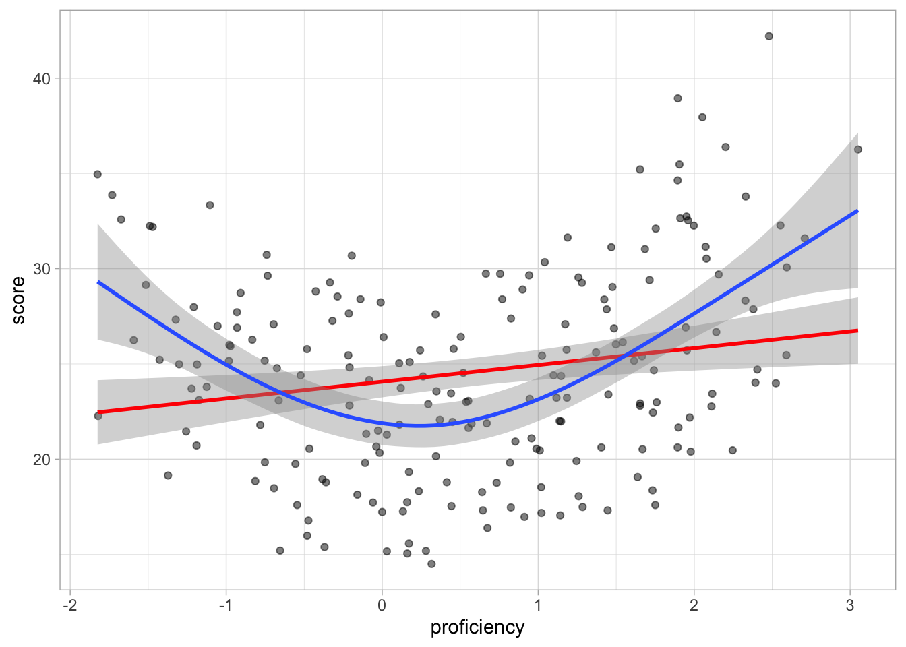
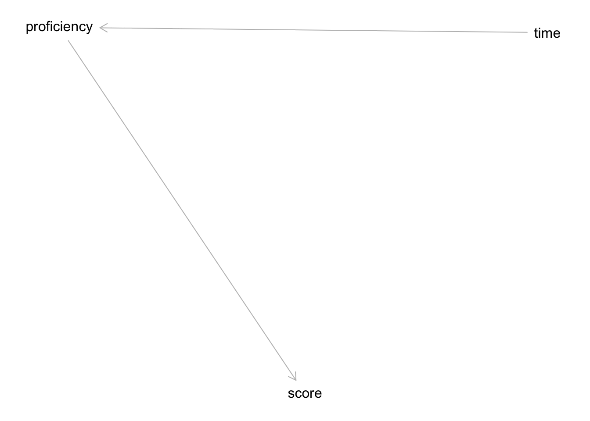
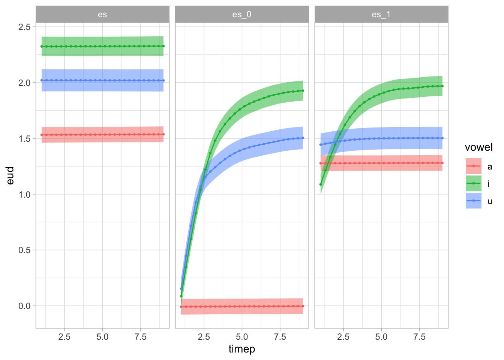

library(tidyverse)
theme_set(theme_light())
library(mgcv)
library(tidygam)
library(ggeffects)
library(dagitty)
my_seed <- 478502 Data analysis
Read data
dat1 <- readRDS("data/dat1.rds")
dat2 <- readRDS("data/dat2.rds")Data 1
Score and proficiency (single time point)
Let’s start with data from a single time point and let’s model score as a function of proficiency.
dat1_5 <- dat1 %>%
filter(time == 5)
dat1_5# A tibble: 200 × 4
score proficiency subj time
<dbl> <dbl> <fct> <int>
1 25.2 -0.983 s1 5
2 18.3 0.235 s2 5
3 27.6 0.342 s3 5
4 28.9 0.900 s4 5
5 20.5 2.25 s5 5
6 23.2 1.12 s6 5
7 32.1 1.75 s7 5
8 25.8 -0.482 s8 5
9 34.6 1.89 s9 5
10 23.0 0.538 s10 5
# ℹ 190 more rowsThere are 200 subjects. The median score is 24.3820745 with a range between 14.5011503 and 42.1930883. The median proficiency is 0.5523342 with a range between -1.8246456 and 3.0510078.
dat1_5 %>%
ggplot(aes(proficiency, score)) +
geom_point(alpha = 0.5) +
geom_smooth()d1_gam_1 <- gam(
score ~ s(proficiency),
data = dat1_5
)
summary(d1_gam_1)
Family: gaussian
Link function: identity
Formula:
score ~ s(proficiency)
Parametric coefficients:
Estimate Std. Error t value Pr(>|t|)
(Intercept) 24.559 0.331 74.19 <2e-16 ***
---
Signif. codes: 0 '***' 0.001 '**' 0.01 '*' 0.05 '.' 0.1 ' ' 1
Approximate significance of smooth terms:
edf Ref.df F p-value
s(proficiency) 2.922 3.675 16.46 <2e-16 ***
---
Signif. codes: 0 '***' 0.001 '**' 0.01 '*' 0.05 '.' 0.1 ' ' 1
R-sq.(adj) = 0.242 Deviance explained = 25.3%
GCV = 22.352 Scale est. = 21.914 n = 200gam.check(d1_gam_1)
Method: GCV Optimizer: magic
Smoothing parameter selection converged after 4 iterations.
The RMS GCV score gradient at convergence was 2.554258e-05 .
The Hessian was positive definite.
Model rank = 10 / 10
Basis dimension (k) checking results. Low p-value (k-index<1) may
indicate that k is too low, especially if edf is close to k'.
k' edf k-index p-value
s(proficiency) 9.00 2.92 1.09 0.83predict_gam(d1_gam_1, length_out = 50) %>%
plot(series = "proficiency")d1_lm <- lm(score ~ proficiency, data = dat1)
summary(d1_lm)
Call:
lm(formula = score ~ proficiency, data = dat1)
Residuals:
Min 1Q Median 3Q Max
-10.1116 -4.1920 -0.2685 3.7372 21.4457
Coefficients:
Estimate Std. Error t value Pr(>|t|)
(Intercept) 24.13514 0.12857 187.72 <2e-16 ***
proficiency 1.07596 0.09646 11.15 <2e-16 ***
---
Signif. codes: 0 '***' 0.001 '**' 0.01 '*' 0.05 '.' 0.1 ' ' 1
Residual standard error: 5.471 on 2198 degrees of freedom
Multiple R-squared: 0.05357, Adjusted R-squared: 0.05314
F-statistic: 124.4 on 1 and 2198 DF, p-value: < 2.2e-16ggpredict(d1_lm, terms = "proficiency") %>% plot()dat1_5 %>%
ggplot(aes(proficiency, score)) +
geom_point(alpha = 0.5) +
geom_smooth(method = "lm", colour = "red") +
geom_smooth(method = "gam")`geom_smooth()` using formula = 'y ~ x'
`geom_smooth()` using formula = 'y ~ s(x, bs = "cs")'
Score by proficiency and time
dat1 %>%
ggplot(aes(proficiency, score, group = subj)) +
geom_path(alpha = 0.5) +
geom_point(alpha = 0.5)
g1 <- dagitty('dag {
proficiency [exposure,pos="-0.677,-0.105"]
score [outcome,pos="-0.070,0.385"]
time [pos="0.529,-0.098"]
proficiency -> score
time -> proficiency
}
')
exposures(g1) <- "proficiency"
outcomes(g1) <- "score"
plot(g1)
adjustmentSets(g1) {}impliedConditionalIndependencies(g1)scor _||_ time | prfcd1_gam_2 <- bam(
score ~
s(proficiency) + s(time) +
s(subj, bs = "re") + s(subj, proficiency, bs = "re"),
data = dat1
)Data 2
dat2 %>%
ggplot(aes(timep, eud, group = id, colour = group)) +
geom_path(alpha = 0.15, linewidth = 1) +
facet_grid(cols = vars(vowel), rows = vars(group))
dat2 <- dat2 %>%
mutate(
group_o = ordered(group, levels = c("es", "es_0", "es_1")),
vowel_o = ordered(vowel, levels = c("a", "i", "u")),
group_vowel_o = ordered(interaction(group_o, vowel_o))
)
contrasts(dat2$group_o) <- "contr.treatment"
contrasts(dat2$vowel_o) <- "contr.treatment"
contrasts(dat2$group_vowel_o) <- "contr.treatment"d2_gam <- bam(
eud ~
group_vowel_o +
s(timep, k = 9) +
s(timep, by = group_vowel_o, k = 9) +
s(timep, subj, bs = "fs", m = 1) +
s(timep, subj, by = vowel_o, bs = "fs", m = 1),
data = dat2
)Warning in gam.side(sm, X, tol = .Machine$double.eps^0.5): model has repeated
1-d smooths of same variable.summary(d2_gam)
Family: gaussian
Link function: identity
Formula:
eud ~ group_vowel_o + s(timep, k = 9) + s(timep, by = group_vowel_o,
k = 9) + s(timep, subj, bs = "fs", m = 1) + s(timep, subj,
by = vowel_o, bs = "fs", m = 1)
Parametric coefficients:
Estimate Std. Error t value Pr(>|t|)
(Intercept) 1.53393 0.03521 43.568 < 2e-16 ***
group_vowel_oes_0.a -1.53971 0.04979 -30.924 < 2e-16 ***
group_vowel_oes_1.a -0.25548 0.04979 -5.131 2.94e-07 ***
group_vowel_oes.i 0.79141 0.02696 29.356 < 2e-16 ***
group_vowel_oes_0.i -0.05242 0.05622 -0.932 0.351
group_vowel_oes_1.i 0.22252 0.05622 3.958 7.62e-05 ***
group_vowel_oes.u 0.48586 0.03632 13.376 < 2e-16 ***
group_vowel_oes_0.u -0.31853 0.06127 -5.199 2.04e-07 ***
group_vowel_oes_1.u -0.04439 0.06127 -0.725 0.469
---
Signif. codes: 0 '***' 0.001 '**' 0.01 '*' 0.05 '.' 0.1 ' ' 1
Approximate significance of smooth terms:
edf Ref.df F p-value
s(timep) 1.000 1.000 0.136 0.7122
s(timep):group_vowel_oes_0.a 1.000 1.000 0.000 0.9970
s(timep):group_vowel_oes_1.a 1.000 1.000 0.020 0.8867
s(timep):group_vowel_oes.i 1.000 1.000 0.013 0.9097
s(timep):group_vowel_oes_0.i 7.425 7.895 1072.980 <2e-16 ***
s(timep):group_vowel_oes_1.i 6.448 7.359 265.182 <2e-16 ***
s(timep):group_vowel_oes.u 1.000 1.000 0.110 0.7396
s(timep):group_vowel_oes_0.u 7.731 7.978 623.071 <2e-16 ***
s(timep):group_vowel_oes_1.u 2.601 3.226 3.378 0.0183 *
s(timep,subj) 56.014 534.000 6.063 <2e-16 ***
s(timep,subj):vowel_oi 86.928 534.000 1.731 <2e-16 ***
s(timep,subj):vowel_ou 60.859 534.000 3.111 <2e-16 ***
---
Signif. codes: 0 '***' 0.001 '**' 0.01 '*' 0.05 '.' 0.1 ' ' 1
R-sq.(adj) = 0.95 Deviance explained = 95.1%
fREML = -3817.4 Scale est. = 0.024281 n = 9720predict_gam(
d2_gam,
length_out = 25,
separate = list(group_vowel_o = c("group", "vowel")),
exclude_terms = c("s(timep,subj)", "s(timep,subj):vowel_oi", "s(timep,subj):vowel_ou"),
values = list(vowel_o = "a", subj = "es_1")
) %>%
plot(series = "timep", comparison = "vowel") +
facet_grid(cols = vars(group))